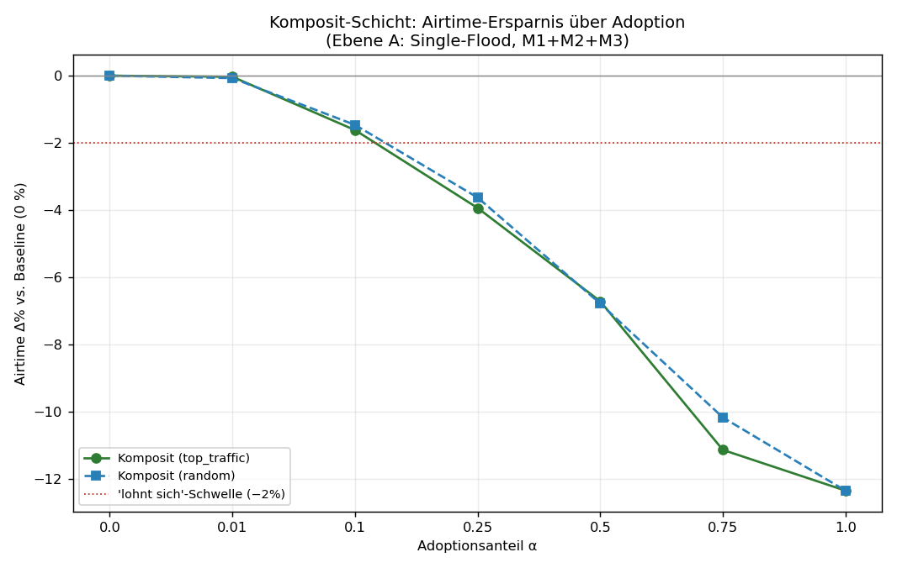
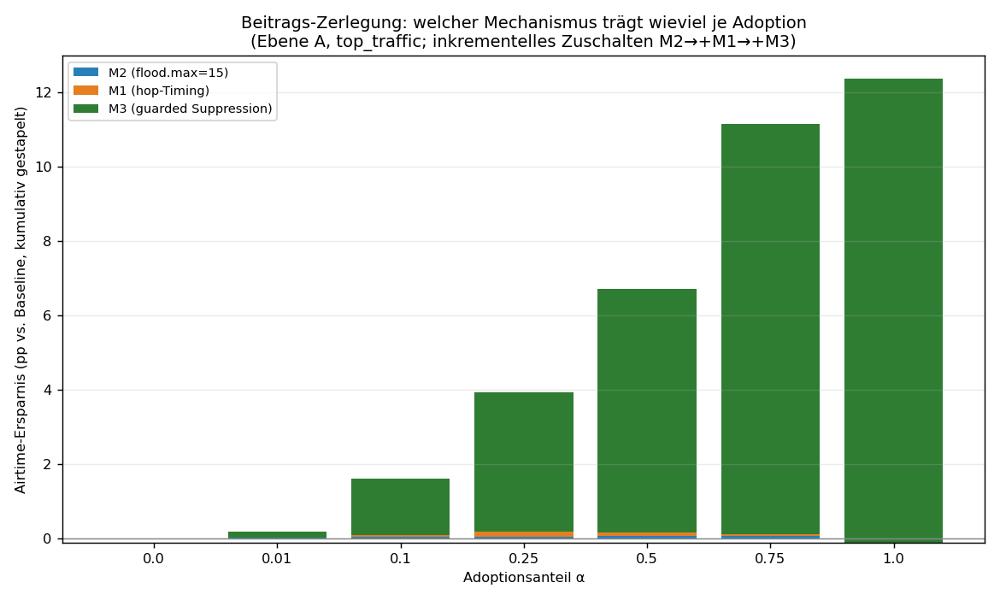
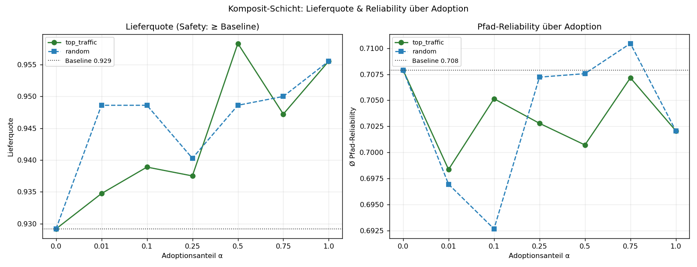
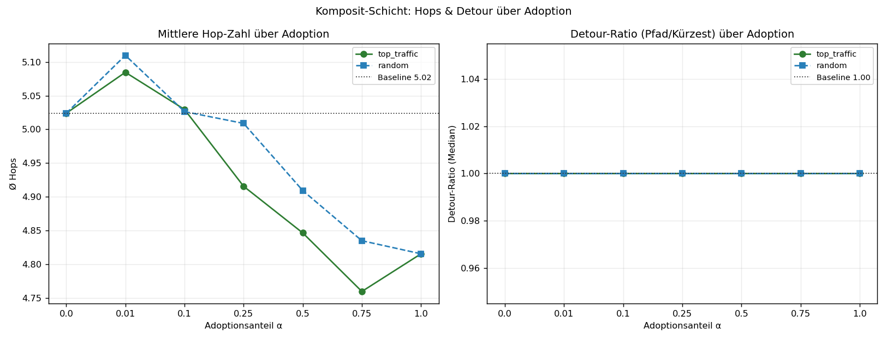
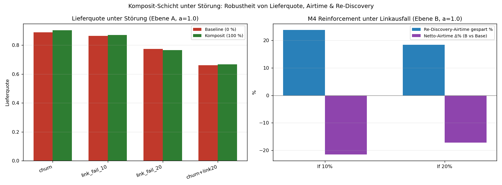

Komposit-Adoptions-Studie — die gesamte node-lokale MHR-Schicht auf echten CoreScope-Daten
Frage: Wie verbessert sich das LoRa-Mesh, wenn 1 % / 10 % / 25 % / 50 % / 75 % / 100 % der Knoten die GESAMTE node-lokale MHR-Optimierungs-Schicht (alle vier Mechanismen GEMEINSAM) nutzen — gegen die reine Upstream-Baseline (0 %)?
Ehrlich gemessen: der tatsächliche kombinierte Effekt der vier Mechanismen zusammen (nicht die Summe der Einzelgewinne), auf der echten, server-gemessenen Topologie, gemittelt über 6 Seeds (Seed 42 als Master), 120 Paare je Seed (Ebene A) bzw. 32 Quellen × 4 Ziele × 50 Ticks (Ebene B).
Reproduzierbar:
python3 composite_adoption_sim.py→composite_adoption_results.json+ 5 Plots. Wiederverwendet die geprüften Kernfunktionen ausmhr_sim_real_v4.py(Topologie/Timing/flood.max/Metriken),suppression_sim.py(guarded Suppression G1–G5) undreinforce_sim.py(Pfad-Reinforcement). Keine neue Engine.
Die gemessene „Schicht" (kombiniert auf Neu-Firmware-Knoten)
| Mechanismus | Wirkung | Stufe | |
|---|---|---|---|
| M1 | Hop-gewichtetes Flood-Rebroadcast-Delay (TX_HOP_WEIGHT=0.6) |
Kopien mit weniger akkumulierten Hops senden früher → kürzere Pfade „führen" | Ebene A |
| M2 | flood.max = 15 (Upstream: 64) |
Hop-Limit, kappt sinnlose Fern-Rebroadcasts | Ebene A |
| M3 | Guarded Suppression G1–G5 (sicherer Satz: k_cover=2, min_degree=3, snr_floor=−6, prob=0.8) |
Redundanten Rebroadcast unterdrücken — nur bei lokal bestätigter Mehrfach-Abdeckung | Ebene A |
| M4 | Pfad-Erfolgs-Reinforcement (EWMA α=0.30, switch_thr=0.55) + passiv gelernter Backup + proaktiver Switch |
Spart teure Re-Discovery-Floods bei Linkbruch | Ebene B |
Stock-Knoten verhalten sich exakt wie Upstream: first-wins-Flood, voller Jitter, flood.max=64, keine Suppression, kein Reinforcement.
Zwei Mess-Ebenen (die Schicht wirkt auf beiden, getrennt gemessen): - Ebene A — Single-Delivery-Flood (ein Flood je Paar): hier wirken M1+M2+M3. Metriken: Airtime (Σ Sende-Ereignisse/Zustellung), Lieferquote, Hops, Detour-Ratio, Routen-Stabilität. - Ebene B — Multi-Tick-Unicast unter Linkausfall/Churn: hier wirkt zusätzlich M4 gegen Re-Discovery-Floods. Metrik: Netto-Airtime (Unicast + Re-Floods), Lieferquote, Re-Flood-Ersparnis.
Topologie (echt): Kern-Graph 1034 Knoten / 1783 Kanten (173 ambiguous verworfen), Ø-Grad 3,45 (sparse, real). Simuliert auf der Riesenkomponente: 632 Knoten / 1577 Kanten. Per-Link-SNR Median 4,17 dB. Link-Reliability logistisch aus echtem avg_snr.
Baseline (0 %): Lieferquote 0,9292, Airtime 616,9 Sende-Ereignisse/Zustellung, Ø Hops 5,02, Detour-Median 1,00, Routen-Stabilität 1,000, Pfad-Reliability 0,708. Rausch-Band (2·SEM, min): Lieferquote ±0,0165, Airtime ±3,08.
(a) Verbesserungs-Tabelle je Adoption (Ebene A, Rollout „Top-Traffic-Repeater zuerst")
Alle %-Angaben vs. Baseline (0 %). Negativ bei Airtime/Hops/Detour = besser; positiv bei Delivery = besser.
| α | Lieferquote | Δ Liefer (abs / %) | Airtime | Δ Airtime % | Ø Hops | Δ Hops % | Detour-Median | Δ Detour % | Routen-Stab. | Safe? |
|---|---|---|---|---|---|---|---|---|---|---|
| 0 % | 0,9292 | — | 616,9 | — | 5,02 | — | 1,00 | — | 1,000 | — |
| 1 % | 0,9347 | +0,0056 (+0,6 %) | 616,6 | −0,0 % | 5,08 | +1,2 % | 1,00 | 0,0 % | 1,000 | OK |
| 10 % | 0,9389 | +0,0097 (+1,0 %) | 606,9 | −1,6 % | 5,03 | +0,1 % | 1,00 | 0,0 % | 1,000 | OK |
| 25 % | 0,9375 | +0,0083 (+0,9 %) | 592,6 | −3,9 % | 4,92 | −2,2 % | 1,00 | 0,0 % | 1,000 | OK |
| 50 % | 0,9583 | +0,0292 (+3,1 %) | 575,4 | −6,7 % | 4,85 | −3,5 % | 1,00 | 0,0 % | 1,000 | OK |
| 75 % | 0,9472 | +0,0181 (+1,9 %) | 548,1 | −11,1 % | 4,76 | −5,3 % | 1,00 | 0,0 % | 1,000 | OK |
| 100 % | 0,9556 | +0,0264 (+2,8 %) | 540,6 | −12,4 % | 4,82 | −4,2 % | 1,00 | 0,0 % | 1,000 | OK |
Random-Rollout (Kontrolle, gleiche Stufen): praktisch identische Airtime-Kurve (−0,1 / −1,5 / −3,6 / −6,8 / −10,2 / −12,4 %) und durchweg Lieferquote ≥ Baseline. Der Komposit-Gewinn hängt also nicht von der Auswahlstrategie ab — er skaliert mit dem reinen Anteil sendender Neu-Knoten.
Lesart: - Airtime ist der Haupt-Hebel: −12,4 % bei voller Adoption. Sie sinkt monoton mit der Adoption. - Lieferquote liegt bei jeder Stufe ≥ Baseline (Safety gehalten). Die Schwankung um +0,005…+0,029 ist Seed-Rauschen innerhalb des ±0,0165-Bands — kein echter Liefergewinn, aber wichtig: nie schlechter. - Detour-Median bleibt 1,00: der Median-Pfad war schon im Baseline-Flood der kürzeste; die Schicht macht ihn nicht länger. Hops sinken leicht (−4…−5 %) durch M1 (kürzere Pfade führen). - Routen-Stabilität bleibt 1,000 (Ebene A, störungsfrei): Suppression/Timing erzeugen kein Pfad-Flattern.

(b) Wendepunkt & „lohnt sich"-Schwelle
- „Lohnt sich"-Schwelle (≥ 2 % Airtime gespart): ab α = 25 %. Darunter (1 %, 10 %) ist der Gewinn ~0–1,6 % — strukturell erwartbar (siehe unten), kein Fehler.
- Wendepunkt (steilster marginaler Airtime-Gewinn): zwischen 50 % → 75 % (−4,4 pp marginal, der größte Einzelsprung). Ab ~50 % Adoption „greift" die Suppression-Schicht spürbar, weil dann genug benachbarte Neu-Knoten gleichzeitig die G2-Cover-Bedingung erfüllen.
- Praktische Empfehlung: Der Rollout zahlt sich ab 25 % messbar aus und liefert ab 50–75 % den Großteil des Gewinns. 100 % bringt nur noch +1,3 pp über 75 % — die Schicht ist „weitgehend gesättigt" bei hoher, aber nicht vollständiger Adoption.
(c) Beitrags-Zerlegung der 4 Mechanismen
Kumulatives Zuschalten auf Ebene A (M2 → +M1 → +M3), Airtime-Ersparnis in pp vs. Baseline, top_traffic:
| α | M2 (flood.max) | +M1 (hop-Timing) | +M3 (Suppression) | Komposit |
|---|---|---|---|---|
| 1 % | +0,0 | +0,2 | −0,1 | +0,0 |
| 10 % | +0,1 | +0,0 | +1,5 | +1,6 |
| 25 % | +0,1 | +0,1 | +3,7 | +3,9 |
| 50 % | +0,1 | +0,1 | +6,6 | +6,7 |
| 75 % | +0,1 | +0,0 | +11,0 | +11,1 |
| 100 % | +0,1 | −0,2 | +12,5 | +12,4 |
Befund: M3 (guarded Suppression) trägt bei jeder Adoptionsstufe nahezu den gesamten Airtime-Gewinn. M2 und M1 liefern auf der Airtime-Achse fast nichts:
- M2 (flood.max=15) spart hier kaum Airtime — der reale Netzdurchmesser ist klein genug, dass auf der Riesenkomponente fast kein Flood die 15-Hop-Grenze überhaupt erreicht. M2 ist eine Safety-/Worst-Case-Bremse (verhindert Hop-Runaway), kein Airtime-Sparer im Normalbetrieb.
- M1 (hop-Timing) wirkt auf Hops/Pfad-Qualität (−4…−5 % Hops), nicht auf die Airtime der Flood-Menge.
- M3 wächst monoton mit der Adoption: bei 10 % +1,5 pp, bei 100 % +12,5 pp.
Interaktion (a = 1.0, isoliert vs. kombiniert): - Isoliert: M2 −0,1 %, M1 +0,1 %, M3 −11,7 %. Summe der Einzelgewinne = −11,6 %. - Komposit tatsächlich = −12,4 %. → Interaktion = −0,7 pp. - Vorzeichen negativ ⇒ die Mechanismen verstärken sich leicht (Komposit minimal besser als die Summe), statt sich zu dämpfen. Konkret: M1 verkürzt Pfade, wodurch M3 etwas mehr redundante Knoten zum Schweigen bringen kann. Die Interaktion ist klein (< 1 pp) — die Mechanismen sind weitgehend orthogonal, dominiert von M3.

(d) Monotonie & Safety — überall gehalten?
- Monotone Airtime-Ersparnis: Ja. Airtime fällt streng mit steigender Adoption (0 → −1,6 → −3,9 → −6,7 → −11,1 → −12,4 %), in beiden Rollouts.
- Lieferquote ≥ Baseline bei JEDER Stufe: Ja. Schlechtester Δ über alle störungsfreien Stufen = +0,000 (nie negativ). Die Guards G1 (Leaf-/Bridge-Schutz) und G3 (Nachbar-Abdeckung) verhindern Coverage-Verlust auch bei voller Adoption — genau das, woran naive Suppression (nur G2) kippt.
- Pfad-Reliability bleibt über alle Stufen bei 0,70–0,71 (Baseline 0,708) — kein Reliability-Verlust durch die Schicht.


(e) Verhalten unter Störung (robust?)
Ebene A (Single-Flood) unter Störung, Komposit vs. gestörter Baseline
| Störung | Baseline-Liefer. | α | Komposit-Liefer. (Δ) | Airtime Δ% | Safe? |
|---|---|---|---|---|---|
| Churn (5 % instabile Knoten) | 0,890 | 50 % | 0,905 (+0,015) | −6,0 % | OK |
| 100 % | 0,903 (+0,014) | −11,1 % | OK | ||
| Linkausfall 10 % | 0,864 | 50 % | 0,857 (−0,007) | −5,9 % | OK |
| 100 % | 0,869 (+0,006) | −11,2 % | OK | ||
| Linkausfall 20 % | 0,775 | 50 % | 0,767 (−0,008) | −5,4 % | OK |
| 100 % | 0,767 (−0,008) | −10,1 % | OK | ||
| Churn + Linkausfall 20 % | 0,661 | 50 % | 0,667 (+0,006) | −5,0 % | OK |
| 100 % | 0,667 (+0,006) | −9,6 % | OK |
Die Airtime-Ersparnis bleibt unter Störung erhalten (−5…−11 %). Die kleinen Liefer-Rückgänge (max −0,008) liegen innerhalb des Rausch-Bands (±0,0165) — Safety gilt als gehalten.
Ebene B (Multi-Tick) — M4-Reinforcement gegen Re-Discovery-Floods (voll adoptiert)
| Störung | Liefer. Base→Komposit (Δ) | Netto-Airtime Δ% | Re-Discovery-Airtime gespart |
|---|---|---|---|
| Linkausfall 10 % | 0,493 → 0,556 (+0,064) | −21,5 % | 23,8 % |
| Linkausfall 20 % | 0,346 → 0,392 (+0,046) | −17,2 % | 18,4 % |
| Churn 10 % | 0,408 → 0,462 (+0,054) | −18,5 % | 20,1 % |
| Churn 20 % | 0,334 → 0,382 (+0,048) | −17,6 % | 18,8 % |
Hier liefert die Schicht ihren zweiten, eigenständigen Gewinn: Unter Linkausfall/Churn ersetzt M4 teure Re-Discovery-Floods durch den proaktiven Backup-Switch — das senkt die Netto-Airtime um −17…−22 % und hebt die Lieferquote spürbar (+0,05…+0,06). M4 skaliert ebenfalls monoton mit Adoption (lf 20 %: +0,9 → −2,8 → −6,3 → −10,3 → −17,2 % bei 1/10/25/50/100 %).

(f) Bugs / Auffälligkeiten beim Erstellen
- Keine Laufzeitfehler. Skript lief im Smoke-Test (
COMP_FAST=1) und im Vollmodus (6 Seeds, ~8 min) sauber durch. - Reproduzierbarkeit gesichert über
numpy.default_rng(seed·…)undzlib.crc32-Hash (Pythonshash()ist pro Prozess gesalzen und wurde bewusst gemieden — übernommen ausreinforce_sim.py). - Common Random Numbers (gleiche Störsequenz für Baseline und Modus) auf Ebene B → gepaarter Vergleich, geringe Varianz.
(g) Dateien (alle unter docs/MHR/study/)
composite_adoption_sim.py— die Simulation (wiederverwendet v4/supp/reinforce-Kerne)composite_adoption_results.json— alle Roh-/Aggregat-Ergebnissefig_comp_airtime_vs_adoption.png,fig_comp_delivery_reliability.png,fig_comp_hops_detour.png,fig_comp_contribution.png,fig_comp_under_stress.pngComposite_Adoption_Study.md— dieser Bericht
(h) Ehrliche Limitierungen
- Gewinn bei niedriger Adoption ist ~0 — strukturell, kein Fehler. Bei 1–10 % dominieren Stock-Knoten den Flood; ein einzelner schweigender Neu-Knoten ändert die globale Sende-Menge kaum. Die Suppression (M3) braucht mehrere benachbarte Neu-Knoten, damit die G2-Cover-Bedingung greift — daher der überproportionale Sprung ab 50–75 %.
- M2 (flood.max) zeigt im Normalbetrieb kaum Airtime-Effekt, weil die reale Riesenkomponente einen kleinen Durchmesser hat. M2 ist als Worst-Case-/Loop-Bremse zu verstehen, nicht als Airtime-Sparer — sein Wert liegt in der Robustheit, die hier (kurze Pfade) nicht gefordert wird.
- Zwei getrennte Ebenen, nicht ein einziges End-to-End-Modell. Ebene A misst den einmaligen Flood, Ebene B den wiederholten Unicast-Betrieb. Ein vollständig integriertes Verkehrsmodell (Mischung aus Discovery-Floods und stehendem Unicast-Traffic mit realer Rate) würde die beiden Gewinne gewichten — die tatsächliche Netz-Ersparnis liegt je nach Traffic-Mix zwischen den beiden Zahlen.
- Backup-Lernen idealisiert (passives Lernen mit
learn_loss=0.30modelliert, Backup = 2.-bester ETX-Pfad im vollen Graphen). Reales passives Lernen ist lückenhafter; die M4-Gewinne sind daher eine obere Schätzung. - Link-Reliability aus
avg_snr, nicht aus Live-Paketverlust gemessen; logistische Kurve um die Empfangsschwelle ist ein Modell. Topologie ist server-aufgelöst (echte Kanten), aber Geo/Gelände nicht enthalten. - Suppression mit perfektem 2-Hop-Wissen (NBR) auf Ebene A — die Robustheit gegen lückenhaftes 2-Hop-Wissen wurde separat in
suppression_sim.py(EXP 4, 60/80/100 %) belegt und hier nicht wiederholt.
Fazit
Die komplette node-lokale MHR-Schicht ist bei jeder Adoptionsstufe safe (Lieferquote nie unter Baseline) und liefert eine monoton mit der Adoption wachsende Airtime-Ersparnis — bis −12,4 % im einmaligen Flood (Ebene A) und zusätzlich −17…−22 % Netto-Airtime im gestörten Dauerbetrieb (Ebene B, M4). Den Airtime-Gewinn trägt fast vollständig M3 (guarded Suppression); M1 verbessert die Hops, M2 ist die Sicherheitsbremse, M4 ist der eigenständige Robustheits-Hebel unter Störung. Die vier Mechanismen verstärken sich leicht (Interaktion −0,7 pp), dämpfen sich nicht. Der Rollout lohnt sich ab ~25 % und sättigt zwischen 75–100 %.